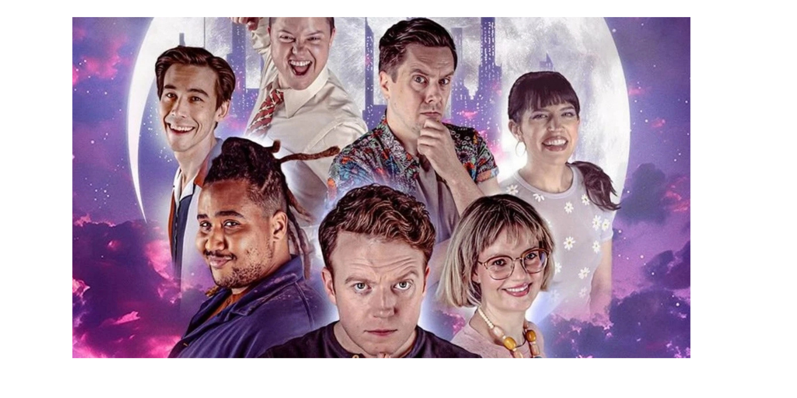

Old Haunts
Explore iconic locations Brennan has referenced—from ghost stations to bodega legends—and uncover their lore in the real world.
Explore iconic locations Brennan has referenced—from ghost stations to bodega legends—and uncover their lore in the real world.